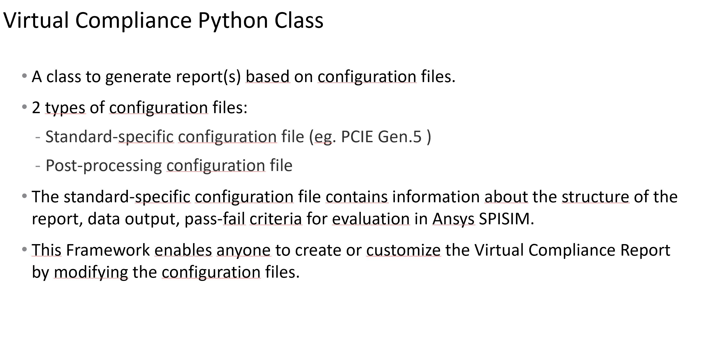
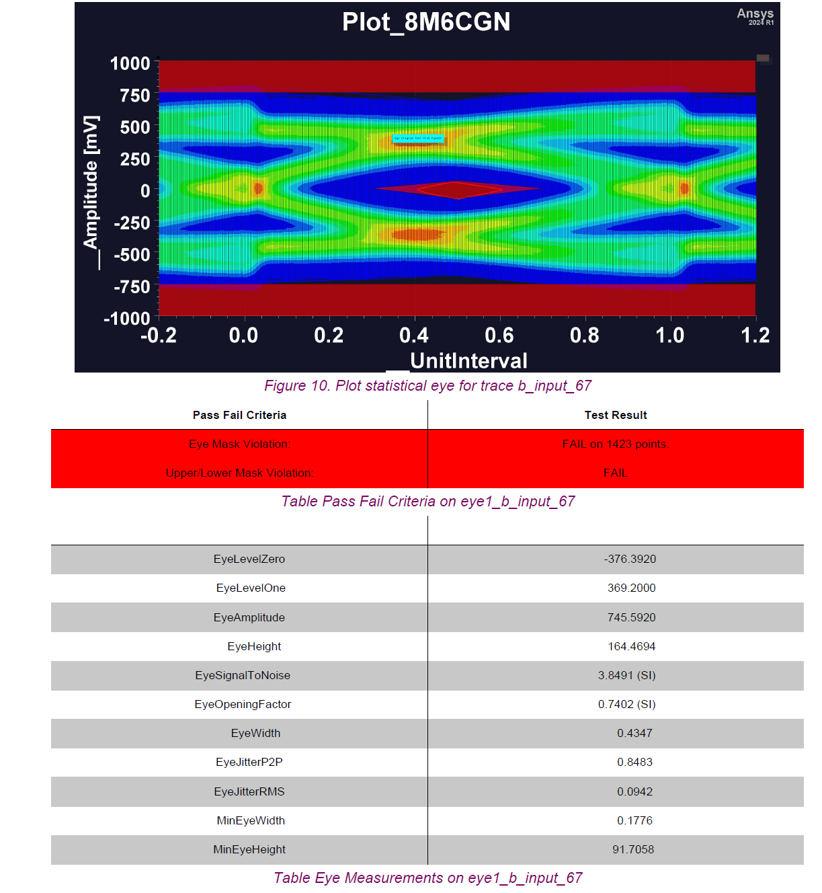
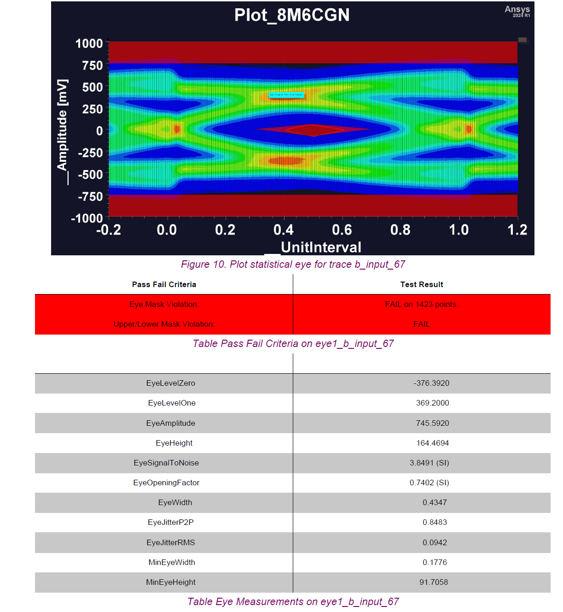

Download this example
Download this example as a Jupyter Notebook or as a Python script.
PCIE virtual compliance#
This example shows how to generate a compliance report in PyAEDT using the VirtualCompliance class.
Keywords: Circuit, Automatic report, virtual compliance.
Perform imports and define constants#
Import the required packages.
[1]:
import os.path
import tempfile
import time
import ansys.aedt.core
from ansys.aedt.core.examples.downloads import download_file
from ansys.aedt.core.visualization.post.compliance import VirtualCompliance
Define constants#
[2]:
AEDT_VERSION = "2025.2"
NUM_CORES = 4
NG_MODE = False # Open AEDT UI when it is launched.
Create temporary directory#
Create a temporary directory where downloaded data or dumped data can be stored. In this example, the temporary directory in where the example is stored and simulation data is saved. If you’d like to retrieve the project data for subsequent use, the temporary folder name is given by temp_folder.name.
[3]:
temp_folder = tempfile.TemporaryDirectory(suffix=".ansys")
Download example data#
[4]:
download_folder = download_file(
source="pcie_compliance", local_path=temp_folder.name
)
project_folder = os.path.join(download_folder, "project")
project_path = os.path.join(project_folder, "PCIE_GEN5_only_layout.aedtz")
Launch AEDT and solve layout#
Open the HFSS 3D Layout project and analyze it using the SIwave solver. Before solving, this code ensures that the model is solved from DC to 70GHz and that causality and passivity are enforced.
[5]:
h3d = ansys.aedt.core.Hfss3dLayout(
project=project_path, version=AEDT_VERSION, non_graphical=NG_MODE
)
h3d.remove_all_unused_definitions()
h3d.edit_cosim_options(simulate_missing_solution=False)
h3d.setups[0].sweeps[0].props["EnforcePassivity"] = True
h3d.setups[0].sweeps[0].props["Sweeps"]["Data"] = "LIN 0MHz 70GHz 0.1GHz"
h3d.setups[0].sweeps[0].props["EnforceCausality"] = True
h3d.setups[0].sweeps[0].update()
h3d.analyze(cores=NUM_CORES)
h3d = ansys.aedt.core.Hfss3dLayout()
touchstone_path = h3d.export_touchstone() # Returns false.
PyAEDT INFO: Python version 3.10.11 (tags/v3.10.11:7d4cc5a, Apr 5 2023, 00:38:17) [MSC v.1929 64 bit (AMD64)].
PyAEDT INFO: PyAEDT version 0.25.dev0.
PyAEDT INFO: Initializing new Desktop session.
PyAEDT INFO: Log on console is enabled.
PyAEDT INFO: Log on file C:\Users\ansys\AppData\Local\Temp\pyaedt_ansys_bf5ab1c6-718a-4d6c-8f96-af395d8afd42.log is enabled.
PyAEDT INFO: Log on AEDT is disabled.
PyAEDT INFO: Starting new AEDT gRPC session.
PyAEDT INFO: AEDT installation Path C:\Program Files\ANSYS Inc\v252\AnsysEM
PyAEDT INFO: Client application successfully started.
PyAEDT INFO: New AEDT gRPC session session started on port 50051.
PyAEDT INFO: 2025.2 version started with process ID 6384.
PyAEDT WARNING: Service Pack is not detected. PyAEDT is currently connecting in Insecure Mode.
PyAEDT WARNING: Please download and install latest Service Pack to use connect to AEDT in Secure Mode.
PyAEDT INFO: Debug logger is disabled. PyAEDT methods will not be logged.
PyAEDT INFO: Archive PCIE_GEN5_only_layout has been restored to project PCIE_GEN5_only_layout
PyAEDT INFO: Active Design set to 1;main_cutout
PyAEDT INFO: Active Design set to 1;main_cutout
PyAEDT INFO: Aedt Objects correctly read
PyAEDT INFO: Parsing C:\Users\ansys\AppData\Local\Temp\tmp4ew9gae3.ansys\pcie_compliance\project\PCIE_GEN5_only_layout.aedt.
PyAEDT INFO: File C:\Users\ansys\AppData\Local\Temp\tmp4ew9gae3.ansys\pcie_compliance\project\PCIE_GEN5_only_layout.aedt correctly loaded. Elapsed time: 0m 0sec
PyAEDT INFO: aedt file load time 0.12672209739685059
PyAEDT INFO: Project PCIE_GEN5_only_layout Saved correctly
PyAEDT INFO: Key Desktop/ActiveDSOConfigurations/HFSS 3D Layout Design correctly changed.
PyAEDT INFO: Solving all design setups. Analysis started...
PyAEDT INFO: Design setup None solved correctly in 0.0h 1.0m 52.0s
PyAEDT INFO: Key Desktop/ActiveDSOConfigurations/HFSS 3D Layout Design correctly changed.
PyAEDT INFO: Python version 3.10.11 (tags/v3.10.11:7d4cc5a, Apr 5 2023, 00:38:17) [MSC v.1929 64 bit (AMD64)].
PyAEDT INFO: PyAEDT version 0.25.dev0.
PyAEDT INFO: Returning found Desktop session with PID 6384!
PyAEDT INFO: No project is defined. Project PCIE_GEN5_only_layout exists and has been read.
PyAEDT INFO: Active Design set to 1;main_cutout
PyAEDT INFO: Active Design set to 1;main_cutout
PyAEDT INFO: Aedt Objects correctly read
PyAEDT INFO: Exporting Touchstone C:\Users\ansys\AppData\Local\Temp\tmp4ew9gae3.ansys\pcie_compliance\project\PCIE_GEN5_only_layout.pyaedt\main_cutout\SIwaveSYZ1_Sweep1.S32p
PyAEDT INFO: Touchstone correctly exported to C:\Users\ansys\AppData\Local\Temp\tmp4ew9gae3.ansys\pcie_compliance\project\PCIE_GEN5_only_layout.pyaedt\main_cutout\SIwaveSYZ1_Sweep1.S32p
Create LNA project#
Use the LNA (linear network analysis) setup to retrieve Touchstone files and generate frequency domain reports.
[6]:
circuit = ansys.aedt.core.Circuit(project=h3d.project_name, design="Touchstone", new_desktop=False)
status, diff_pairs, comm_pairs = circuit.create_lna_schematic_from_snp(
input_file=touchstone_path,
start_frequency=0,
stop_frequency=70,
auto_assign_diff_pairs=True,
separation=".",
pattern=["component", "pin", "net"],
analyze=True,
)
insertion = circuit.get_all_insertion_loss_list(
drivers=diff_pairs,
receivers=diff_pairs,
drivers_prefix_name="X1",
receivers_prefix_name="U1",
math_formula="dB",
nets=["RX0", "RX1", "RX2", "RX3"],
)
return_diff = circuit.get_all_return_loss_list(
excitations=diff_pairs,
excitation_name_prefix="X1",
math_formula="dB",
nets=["RX0", "RX1", "RX2", "RX3"],
)
return_comm = circuit.get_all_return_loss_list(
excitations=comm_pairs,
excitation_name_prefix="COMMON_X1",
math_formula="dB",
nets=["RX0", "RX1", "RX2", "RX3"],
)
PyAEDT INFO: Python version 3.10.11 (tags/v3.10.11:7d4cc5a, Apr 5 2023, 00:38:17) [MSC v.1929 64 bit (AMD64)].
PyAEDT INFO: PyAEDT version 0.25.dev0.
PyAEDT INFO: Returning found Desktop session with PID 6384!
PyAEDT INFO: Project PCIE_GEN5_only_layout set to active.
PyAEDT INFO: Added design 'Touchstone' of type Circuit Design.
PyAEDT INFO: Aedt Objects correctly read
PyAEDT INFO: Python version 3.10.11 (tags/v3.10.11:7d4cc5a, Apr 5 2023, 00:38:17) [MSC v.1929 64 bit (AMD64)].
PyAEDT INFO: PyAEDT version 0.25.dev0.
PyAEDT INFO: Returning found Desktop session with PID 6384!
PyAEDT INFO: Project PCIE_GEN5_only_layout set to active.
PyAEDT INFO: Added design 'LNA' of type Circuit Design.
PyAEDT INFO: Aedt Objects correctly read
PyAEDT INFO: ModelerCircuit class has been initialized! Elapsed time: 0m 0sec
PyAEDT INFO: ModelerNexxim class has been initialized!
PyAEDT INFO: Modeler class has been initialized! Elapsed time: 0m 0sec
PyAEDT INFO: Parsing C:\Users\ansys\AppData\Local\Temp\tmp4ew9gae3.ansys\pcie_compliance\project\PCIE_GEN5_only_layout.aedt.
PyAEDT INFO: File C:\Users\ansys\AppData\Local\Temp\tmp4ew9gae3.ansys\pcie_compliance\project\PCIE_GEN5_only_layout.aedt correctly loaded. Elapsed time: 0m 0sec
PyAEDT INFO: aedt file load time 0.09495019912719727
PyAEDT INFO: Project PCIE_GEN5_only_layout Saved correctly
PyAEDT INFO: Solving all design setups. Analysis started...
PyAEDT INFO: Design setup None solved correctly in 0.0h 0.0m 9.0s
Create TDR project#
Create a TDR project to compute transient simulation and retrieve the TDR measurement on a differential pair. The original circuit schematic is duplicated and modified to achieve this target.
[7]:
result, tdr_probe_name = circuit.create_tdr_schematic_from_snp(
input_file=touchstone_path,
tx_schematic_pins=["X1.A2.PCIe_Gen4_RX0_P"],
tx_schematic_differential_pins=["X1.A3.PCIe_Gen4_RX0_N"],
termination_pins=["U1.AP26.PCIe_Gen4_RX0_P", "U1.AN26.PCIe_Gen4_RX0_N"],
differential=True,
rise_time=35,
use_convolution=True,
analyze=True,
design_name="TDR",
)
PyAEDT INFO: Python version 3.10.11 (tags/v3.10.11:7d4cc5a, Apr 5 2023, 00:38:17) [MSC v.1929 64 bit (AMD64)].
PyAEDT INFO: PyAEDT version 0.25.dev0.
PyAEDT INFO: Returning found Desktop session with PID 6384!
PyAEDT INFO: Project PCIE_GEN5_only_layout set to active.
PyAEDT INFO: Added design 'TDR' of type Circuit Design.
PyAEDT INFO: Aedt Objects correctly read
PyAEDT INFO: ModelerCircuit class has been initialized! Elapsed time: 0m 0sec
PyAEDT INFO: ModelerNexxim class has been initialized!
PyAEDT INFO: Modeler class has been initialized! Elapsed time: 0m 0sec
PyAEDT WARNING: Property Z0 has not been edited.Check if readonly
PyAEDT WARNING: Property Pulse_repetition has not been edited.Check if readonly
PyAEDT INFO: Parsing C:\Users\ansys\AppData\Local\Temp\tmp4ew9gae3.ansys\pcie_compliance\project\PCIE_GEN5_only_layout.aedt.
PyAEDT INFO: File C:\Users\ansys\AppData\Local\Temp\tmp4ew9gae3.ansys\pcie_compliance\project\PCIE_GEN5_only_layout.aedt correctly loaded. Elapsed time: 0m 0sec
PyAEDT INFO: aedt file load time 0.1231997013092041
PyAEDT INFO: Project PCIE_GEN5_only_layout Saved correctly
PyAEDT INFO: Solving all design setups. Analysis started...
PyAEDT INFO: Design setup None solved correctly in 0.0h 0.0m 10.0s
PyAEDT INFO: Post class has been initialized! Elapsed time: 0m 0sec
PyAEDT WARNING: No report category provided. Automatically identified Standard
Create AMI project#
Create an Ibis AMI project to compute an eye diagram simulation and retrieve eye mask violations.
[8]:
_, eye_curve_tx, eye_curve_rx = circuit.create_ami_schematic_from_snp(
input_file=touchstone_path,
ibis_tx_file=os.path.join(project_folder, "models", "pcieg5_32gt.ibs"),
tx_buffer_name="1p",
rx_buffer_name="2p",
tx_schematic_pins=["U1.AM25.PCIe_Gen4_TX0_CAP_P"],
rx_schematic_pins=["X1.B2.PCIe_Gen4_TX0_P"],
tx_schematic_differential_pins=["U1.AL25.PCIe_Gen4_TX0_CAP_N"],
rx_schematic_differentialial_pins=["X1.B3.PCIe_Gen4_TX0_N"],
ibis_tx_component_name="Spec_Model",
use_ibis_buffer=False,
differential=True,
bit_pattern="random_bit_count=2.5e3 random_seed=1",
unit_interval="31.25ps",
use_convolution=True,
analyze=True,
design_name="AMI",
)
PyAEDT INFO: Python version 3.10.11 (tags/v3.10.11:7d4cc5a, Apr 5 2023, 00:38:17) [MSC v.1929 64 bit (AMD64)].
PyAEDT INFO: PyAEDT version 0.25.dev0.
PyAEDT INFO: Returning found Desktop session with PID 6384!
PyAEDT INFO: Project PCIE_GEN5_only_layout set to active.
PyAEDT INFO: Added design 'AMI' of type Circuit Design.
PyAEDT INFO: Aedt Objects correctly read
PyAEDT INFO: ModelerCircuit class has been initialized! Elapsed time: 0m 0sec
PyAEDT INFO: ModelerNexxim class has been initialized!
PyAEDT INFO: Modeler class has been initialized! Elapsed time: 0m 0sec
PyAEDT WARNING: Property probe_name has not been edited.Check if readonly
PyAEDT WARNING: Property source_name has not been edited.Check if readonly
PyAEDT INFO: Project PCIE_GEN5_only_layout Saved correctly
PyAEDT INFO: Key Desktop/ActiveDSOConfigurations/Circuit Design correctly changed.
PyAEDT INFO: Solving design setup AMI
PyAEDT INFO: Design setup AMI solved correctly in 0.0h 0.0m 21.0s
PyAEDT INFO: Key Desktop/ActiveDSOConfigurations/Circuit Design correctly changed.
[9]:
circuit.save_project()
PyAEDT INFO: Project PCIE_GEN5_only_layout Saved correctly
[9]:
True
Create virtual compliance report#
Initialize the VirtualCompliance class and set up the main project information needed to generate the report.

[10]:
template = os.path.join(download_folder, "pcie_gen5_templates", "main.json")
[11]:
v = VirtualCompliance(circuit.desktop_class, str(template))
Customize project and design#
Define the path to the project file and the design names to be used in each report generation.

[12]:
v.project_file = circuit.project_file
v.reports["insertion losses"].design_name = "LNA"
v.reports["return losses"].design_name = "LNA"
v.reports["common mode return losses"].design_name = "LNA"
v.reports["tdr from circuit"].design_name = "TDR"
v.reports["eye1"].design_name = "AMI"
v.reports["eye3"].design_name = "AMI"
v.parameters["erl"].design_name = "LNA"
v.specs_folder = os.path.join(download_folder, "readme_pictures")
Define trace names#
Change the trace name with projects and users. Reuse the compliance template and update traces accordingly.
[13]:
v.reports["insertion losses"].traces = insertion
[14]:
v.reports["return losses"].traces = return_diff
[15]:
v.reports["common mode return losses"].traces = return_comm
[16]:
v.reports["eye1"].traces = eye_curve_tx
v.reports["eye3"].traces = eye_curve_tx
v.reports["tdr from circuit"].traces = tdr_probe_name
v.parameters["erl"].trace_pins = [
[
"X1.A5.PCIe_Gen4_RX1_P",
"X1.A6.PCIe_Gen4_RX1_N",
"U1.AR25.PCIe_Gen4_RX1_P",
"U1.AP25.PCIe_Gen4_RX1_N",
],
[7, 8, 18, 17],
]
Generate PDF report#
Generate the reports and produce a PDF report.
 

[17]:
v.create_compliance_report()
PyAEDT INFO: Active Design set to 201;AMI
PyAEDT INFO: Specifications info added to the report.
PyAEDT INFO: Python version 3.10.11 (tags/v3.10.11:7d4cc5a, Apr 5 2023, 00:38:17) [MSC v.1929 64 bit (AMD64)].
PyAEDT INFO: PyAEDT version 0.25.dev0.
PyAEDT INFO: Returning found Desktop session with PID 6384!
PyAEDT INFO: Project PCIE_GEN5_only_layout set to active.
PyAEDT INFO: Active Design set to 196;LNA
PyAEDT INFO: Aedt Objects correctly read
PyAEDT INFO: ModelerCircuit class has been initialized! Elapsed time: 0m 0sec
PyAEDT INFO: Parsing C:\Users\ansys\AppData\Local\Temp\tmp4ew9gae3.ansys\pcie_compliance\project\PCIE_GEN5_only_layout.aedt.
PyAEDT INFO: File C:\Users\ansys\AppData\Local\Temp\tmp4ew9gae3.ansys\pcie_compliance\project\PCIE_GEN5_only_layout.aedt correctly loaded. Elapsed time: 0m 0sec
PyAEDT INFO: aedt file load time 0.17434930801391602
PyAEDT INFO: ModelerNexxim class has been initialized!
PyAEDT INFO: Modeler class has been initialized! Elapsed time: 0m 9sec
PyAEDT INFO: Exporting Touchstone C:\Users\ansys\AppData\Local\Temp\tmp4ew9gae3.ansys\pcie_compliance\project\PCIE_GEN5_only_layout.pyaedt\LNA\MySetupAuto_MySetupAuto.S32p
PyAEDT INFO: Touchstone correctly exported to C:\Users\ansys\AppData\Local\Temp\tmp4ew9gae3.ansys\pcie_compliance\project\PCIE_GEN5_only_layout.pyaedt\LNA\MySetupAuto_MySetupAuto.S32p
PyAEDT INFO: Execute : C:\Program Files\ANSYS Inc\v252\AnsysEM\spisim\SPISim\modules\ext\SPISimJNI_WIN64.exe CalcERL -v CFGFILE=spisim_erl.cfg
PyAEDT INFO: Exporting Touchstone C:\Users\ansys\AppData\Local\Temp\tmp4ew9gae3.ansys\pcie_compliance\project\PCIE_GEN5_only_layout.pyaedt\LNA\MySetupAuto_MySetupAuto.S32p
PyAEDT INFO: Touchstone correctly exported to C:\Users\ansys\AppData\Local\Temp\tmp4ew9gae3.ansys\pcie_compliance\project\PCIE_GEN5_only_layout.pyaedt\LNA\MySetupAuto_MySetupAuto.S32p
PyAEDT INFO: Execute : C:\Program Files\ANSYS Inc\v252\AnsysEM\spisim\SPISim\modules\ext\SPISimJNI_WIN64.exe CalcERL -v CFGFILE=spisim_erl.cfg
PyAEDT INFO: Parameters erl added to the report.
PyAEDT INFO: Adding report insertion losses.
PyAEDT INFO: Python version 3.10.11 (tags/v3.10.11:7d4cc5a, Apr 5 2023, 00:38:17) [MSC v.1929 64 bit (AMD64)].
PyAEDT INFO: PyAEDT version 0.25.dev0.
PyAEDT INFO: Returning found Desktop session with PID 6384!
PyAEDT INFO: Project PCIE_GEN5_only_layout set to active.
PyAEDT INFO: Active Design set to 196;LNA
PyAEDT INFO: Aedt Objects correctly read
PyAEDT INFO: Creating report insertion losses
PyAEDT INFO: Post class has been initialized! Elapsed time: 0m 0sec
PyAEDT INFO: Report Plot_E7WD0J created successfully.
PyAEDT INFO: Checking lines violations
PyAEDT INFO: Solution Data Correctly Loaded.
Time to initialize solution data:0.0
Time to initialize solution data:0.018616437911987305
PyAEDT INFO: Successfully parsed report insertion losses for trace dB(S(X1_PCIe_Gen4_RX0_P,U1_PCIe_Gen4_RX0_P))
PyAEDT INFO: Creating report insertion losses
PyAEDT INFO: Report Plot_A443JX created successfully.
PyAEDT INFO: Checking lines violations
PyAEDT INFO: Solution Data Correctly Loaded.
Time to initialize solution data:0.0
Time to initialize solution data:0.0
PyAEDT INFO: Successfully parsed report insertion losses for trace dB(S(X1_PCIe_Gen4_RX1_P,U1_PCIe_Gen4_RX1_P))
PyAEDT INFO: Creating report insertion losses
PyAEDT INFO: Report Plot_GC69L7 created successfully.
PyAEDT INFO: Checking lines violations
PyAEDT INFO: Solution Data Correctly Loaded.
Time to initialize solution data:0.008692502975463867
Time to initialize solution data:0.015639781951904297
PyAEDT INFO: Successfully parsed report insertion losses for trace dB(S(X1_PCIe_Gen4_RX2_P,U1_PCIe_Gen4_RX2_P))
PyAEDT INFO: Creating report insertion losses
PyAEDT INFO: Report Plot_55TEYN created successfully.
PyAEDT INFO: Checking lines violations
PyAEDT INFO: Solution Data Correctly Loaded.
Time to initialize solution data:0.0
Time to initialize solution data:0.015841245651245117
PyAEDT INFO: Successfully parsed report insertion losses for trace dB(S(X1_PCIe_Gen4_RX3_P,U1_PCIe_Gen4_RX3_P))
PyAEDT INFO: Report insertion losses added to the pdf.
PyAEDT INFO: Adding report return losses.
PyAEDT INFO: Creating report return losses
PyAEDT INFO: Report Plot_WQLA9W created successfully.
PyAEDT INFO: Checking lines violations
PyAEDT INFO: Solution Data Correctly Loaded.
Time to initialize solution data:0.0
Time to initialize solution data:0.03301501274108887
PyAEDT INFO: Successfully parsed report return losses
PyAEDT INFO: Report return losses added to the pdf.
PyAEDT INFO: Adding report common mode return losses.
PyAEDT INFO: Creating report common mode return losses
PyAEDT INFO: Report Plot_1G5KOE created successfully.
PyAEDT INFO: Checking lines violations
PyAEDT INFO: Solution Data Correctly Loaded.
Time to initialize solution data:0.0
Time to initialize solution data:0.03180360794067383
PyAEDT INFO: Successfully parsed report common mode return losses
PyAEDT INFO: Report common mode return losses added to the pdf.
PyAEDT INFO: Adding report tdr from circuit.
PyAEDT INFO: Python version 3.10.11 (tags/v3.10.11:7d4cc5a, Apr 5 2023, 00:38:17) [MSC v.1929 64 bit (AMD64)].
PyAEDT INFO: PyAEDT version 0.25.dev0.
PyAEDT INFO: Returning found Desktop session with PID 6384!
PyAEDT INFO: Project PCIE_GEN5_only_layout set to active.
PyAEDT INFO: Active Design set to 198;TDR
PyAEDT INFO: Aedt Objects correctly read
PyAEDT INFO: Creating report tdr from circuit
PyAEDT INFO: Post class has been initialized! Elapsed time: 0m 0sec
PyAEDT INFO: Report Plot_UB62QD created successfully.
PyAEDT INFO: Checking lines violations
PyAEDT INFO: Solution Data Correctly Loaded.
Time to initialize solution data:0.0029714107513427734
Time to initialize solution data:0.0029714107513427734
PyAEDT INFO: Successfully parsed report tdr from circuit for trace O(A200:zdiff)
PyAEDT INFO: Report tdr from circuit added to the pdf.
PyAEDT INFO: Adding report eye1.
PyAEDT INFO: Python version 3.10.11 (tags/v3.10.11:7d4cc5a, Apr 5 2023, 00:38:17) [MSC v.1929 64 bit (AMD64)].
PyAEDT INFO: PyAEDT version 0.25.dev0.
PyAEDT INFO: Returning found Desktop session with PID 6384!
PyAEDT INFO: Project PCIE_GEN5_only_layout set to active.
PyAEDT INFO: Active Design set to 201;AMI
PyAEDT INFO: Aedt Objects correctly read
PyAEDT INFO: Creating report eye1
PyAEDT INFO: Post class has been initialized! Elapsed time: 0m 0sec
PyAEDT INFO: Report Plot_UQ5UX5 created successfully.
PyAEDT INFO: Checking eye violations
PyAEDT INFO: Solution Data Correctly Loaded.
Time to initialize solution data:0.3650178909301758
Time to initialize solution data:1.0461673736572266
PyAEDT WARNING: Failed to compute violation for chart eye1b_input_204
PyAEDT INFO: Adding eye measurements.
PyAEDT INFO: Successfully parsed report eye1 for trace b_input_204
PyAEDT INFO: Report eye1 added to the pdf.
PyAEDT INFO: Adding report eye3.
PyAEDT INFO: Creating report eye3
PyAEDT INFO: Report Plot_12URTL created successfully.
PyAEDT INFO: Checking eye violations
PyAEDT INFO: Solution Data Correctly Loaded.
Time to initialize solution data:0.36382436752319336
Time to initialize solution data:1.1244778633117676
PyAEDT WARNING: Failed to compute violation for chart eye3b_input_204
PyAEDT INFO: Successfully parsed report eye3 for trace b_input_204
PyAEDT INFO: Report eye3 added to the pdf.
PyAEDT INFO: Python version 3.10.11 (tags/v3.10.11:7d4cc5a, Apr 5 2023, 00:38:17) [MSC v.1929 64 bit (AMD64)].
PyAEDT INFO: PyAEDT version 0.25.dev0.
PyAEDT INFO: Returning found Desktop session with PID 6384!
PyAEDT INFO: Project PCIE_GEN5_only_layout set to active.
PyAEDT INFO: Active Design set to 196;LNA
PyAEDT INFO: Aedt Objects correctly read
PyAEDT INFO: ModelerCircuit class has been initialized! Elapsed time: 0m 0sec
PyAEDT INFO: ModelerNexxim class has been initialized!
PyAEDT INFO: Modeler class has been initialized! Elapsed time: 0m 9sec
PyAEDT INFO: Python version 3.10.11 (tags/v3.10.11:7d4cc5a, Apr 5 2023, 00:38:17) [MSC v.1929 64 bit (AMD64)].
PyAEDT INFO: PyAEDT version 0.25.dev0.
PyAEDT INFO: Returning found Desktop session with PID 6384!
PyAEDT INFO: Project PCIE_GEN5_only_layout set to active.
PyAEDT INFO: Active Design set to 198;TDR
PyAEDT INFO: Aedt Objects correctly read
PyAEDT INFO: ModelerCircuit class has been initialized! Elapsed time: 0m 0sec
PyAEDT INFO: ModelerNexxim class has been initialized!
PyAEDT INFO: Modeler class has been initialized! Elapsed time: 0m 1sec
PyAEDT INFO: Python version 3.10.11 (tags/v3.10.11:7d4cc5a, Apr 5 2023, 00:38:17) [MSC v.1929 64 bit (AMD64)].
PyAEDT INFO: PyAEDT version 0.25.dev0.
PyAEDT INFO: Returning found Desktop session with PID 6384!
PyAEDT INFO: Project PCIE_GEN5_only_layout set to active.
PyAEDT INFO: Active Design set to 201;AMI
PyAEDT INFO: Aedt Objects correctly read
PyAEDT INFO: ModelerCircuit class has been initialized! Elapsed time: 0m 0sec
PyAEDT INFO: ModelerNexxim class has been initialized!
PyAEDT INFO: Modeler class has been initialized! Elapsed time: 0m 0sec
PyAEDT INFO: Project info added to the report.
PyAEDT INFO: Report has been saved in C:/Users/ansys/AppData/Local/Temp/tmp4ew9gae3.ansys/pcie_compliance/project/PCIE_GEN5_only_layout.pyaedt\PCIExpress_DWWAR1\compliance_test.pdf
[17]:
'C:/Users/ansys/AppData/Local/Temp/tmp4ew9gae3.ansys/pcie_compliance/project/PCIE_GEN5_only_layout.pyaedt\\PCIExpress_DWWAR1\\compliance_test.pdf'
Release AEDT#
[18]:
h3d.release_desktop()
# Wait 3 seconds to allow AEDT to shut down before cleaning the temporary directory.
time.sleep(3)
PyAEDT INFO: Desktop has been released and closed.
Clean up#
All project files are saved in the folder temp_folder.name. If you’ve run this example as a Jupyter notebook, you can retrieve those project files. The following cell removes all temporary files, including the project folder.
[19]:
temp_folder.cleanup()
Download this example
Download this example as a Jupyter Notebook or as a Python script.